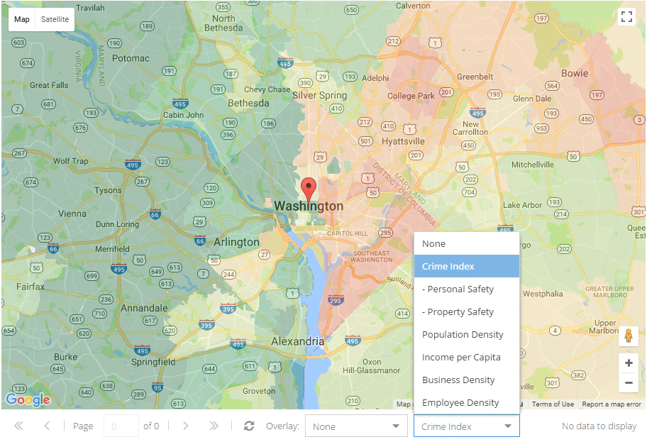

Search with Safety Index
FindOptimal provides the neighborhood safety information for each hotel in the United States. When you define your scoring profile, you can select Neighborhood Safety as well as other demographic index, such as Population Density and Income per Capita. You can define a safety condition as Fare (safer than 50% of areas in the United States), Good (safer than 75% of areas) or Very Good(safer than 90% of areas). If you mandate such a condition, you will only see hotels with higher than the score in the search result. Alternatively, you can assign a value to each point of the index (Value per percentile). For example, let's assume the safety indexes of two identical hotels A and B are 71% and 70%, respectively. If you assign $10 to each percentile, hotel B will only be ranked before hotel A when B's price is $10 lower than A's.